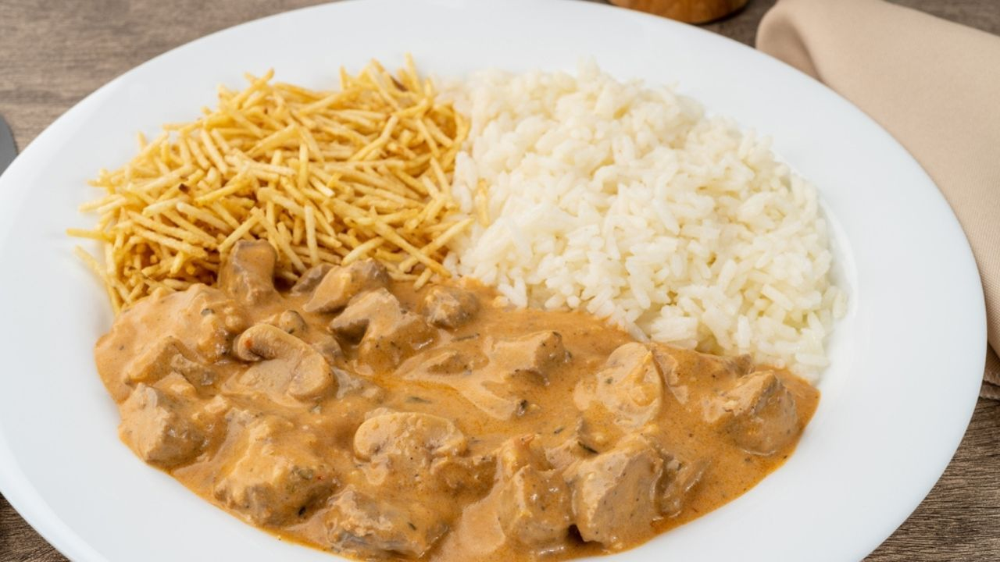

Muita gente nem imagina, mas o estrogonofe foi criado na Rússia em meados do século XIX. Acredita-se que foi desenvolvido por membros da família Stroganov, que batizou a receita com seu sobrenome. Originalmente, o prato levava carne bovina cozida com mostarda, acompanhada de creme azedo, feito com leite
